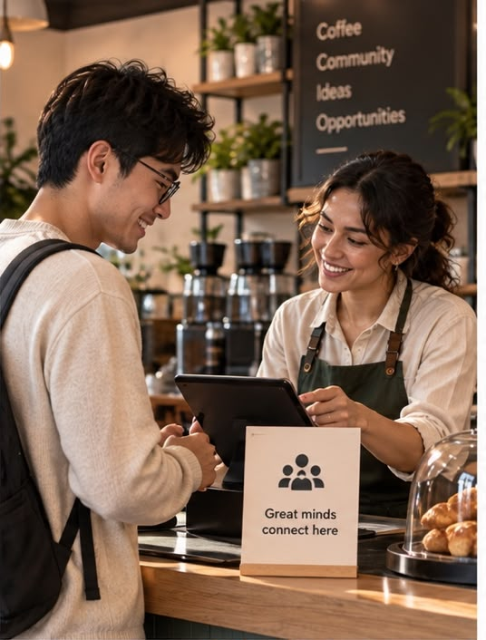
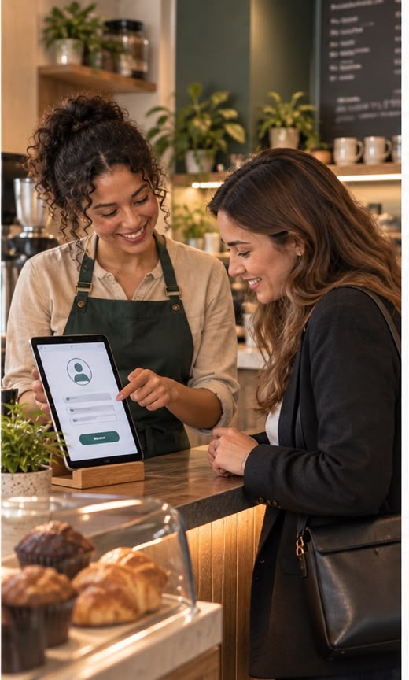
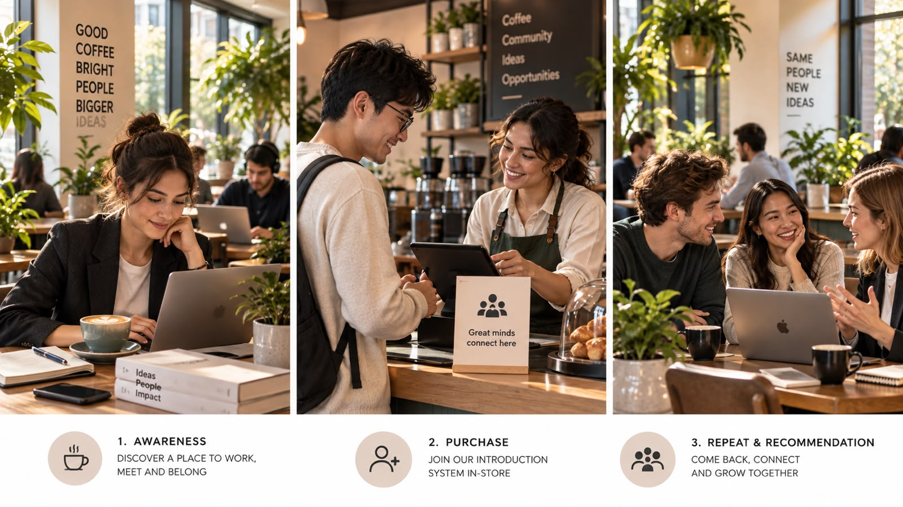

Pass 1. Does it bring the promise to life?
The promise is “come for the peace and coffee, stay for the community.” The campaign is not a claim about community; it is the mechanism that produces one, visible from the queue.
The Introduction ← Back to the cafe
The brief
We already provide everything a good working day needs: the peace, the convenience, the organic coffee, the calm. The Introduction is the part the other like-minded visitors provide — we just make it happen on purpose.
Sign up at the counter and we’ll ask you a few questions at convenient moments, visit by visit, until we know exactly who you should meet. When we find the overlap, we wait for the afternoon you’re both in the room with your markers turned to “open” — and we walk over and make the introduction.
It costs us a rounding error to run. It gives a member a reason to pick us over the chain on the corner every single week, and a reason to bring the people they’d want sitting at the next table.
The one-line strategy Spend almost nothing turning the room’s own regulars into each other’s best reason to come back — so a member we win for about $32 a year is worth roughly ten times that before they’ve referred anyone.
01
Awareness
Networking that flows naturally from your work.
Alternate: “Get the work done. Meet the right person anyway.”
Our introduction system makes the connection a byproduct of the hours you were going to put in regardless — a calm work lounge and a networking event, in the same room, at the same time.
Sign up at the counter. Harrison & Waltham, open 7 to 7.
Answers: brings the promise to life — the ad is a photograph of the actual promise; reaches the right who, in a channel they welcome — people already choosing somewhere to work, reached where working people look; leaves a number behind — sign-ups at the counter are counted by hand, daily.
02
Purchase


Great minds connect here. Tell us what you’re working on, and we’ll find you someone worth meeting.
Turn me over when you’re open to an introduction.
What you tell us stays behind our counter. We don’t sell it, share it or mail you anything you didn’t ask for, and if you’d like it gone, say so and it’s gone that day. Heads down means heads down — nobody comes near your table, us included.
Answers: brings the promise to life — you can watch it happening from the queue before you sign anything; double duty — one surface both sells the idea and is the machinery that runs it; measurable — sign-ups, profile completeness and introductions made are all counted at the counter.
03
Repeat & recommendation
You’re part of a community, not just a customer. Good for a seat, an introduction, and a standing invitation to everything we put on.
Know someone worth introducing? Bring them in. Their first month is on us, and so is your next week of coffee.
Follow the cafe’s pages so you hear about the next one. That is the whole ask — the rest happens in the room.
Answers: double duty — the referral wins a customer and keeps the one who made it in a single motion; compounds — every member added makes the introduction list more valuable to every other member; measurable — referrals are named, so we can count what each member brings in.

Debrief · for shareholders
The campaign asks for a small, mostly fixed sum and returns a member who visits roughly twice as often, spends across three categories instead of one, and recruits the next member for us. Here is where the money comes from, and what it costs to make.
Every lever returns far more than it costs
Annual cost to run against annual incremental gross profit, by campaign lever. Same scale, both series.
Scroll the chart sideways →
| Lever | Annual cost | Annual return | Multiple |
|---|---|---|---|
| The Introduction network | $2,400 | $58,000 | 24.2× |
| Loyalty & referral rewards | $6,000 | $41,000 | 6.8× |
| Events programming | $4,500 | $22,000 | 4.9× |
| Word of mouth & social | $0 | $3,400 | earned |
| Total | $12,900 | $124,400 | 9.6× |
The Smart-Spend Test
Every dollar of a growth campaign has to answer four questions. Run honestly, this one answers three cleanly and has to work for the fourth.
The promise is “come for the peace and coffee, stay for the community.” The campaign is not a claim about community; it is the mechanism that produces one, visible from the queue.
It reaches people at the moment they are choosing somewhere to spend four hours working, in the one channel they cannot ignore — the room itself, and the card on the counter they are already standing at.
Double duty throughout. The counter surface sells and runs the programme. The referral wins a customer and rewards the one who sent them. And the list gets more valuable to every member each time a member joins.
Sign-ups, introductions made and named referrals are all countable at the counter. The number we cannot yet observe is whether an introduction actually changes visit frequency — that needs a control group we have not designed.
The mechanic, yes. The asset, no. Table markers and a sign-up tablet are a weekend of work for anybody. What takes a year is a roster of four hundred regulars whose projects a staff member can hold in their head, and the standing that lets that staff member walk up to two working strangers and interrupt them.
So the moat is not the campaign — it is the accumulated list and the people who keep it. Which means the honest risk is staff turnover, not imitation, and the spend that protects the moat is retaining whoever is on bar.